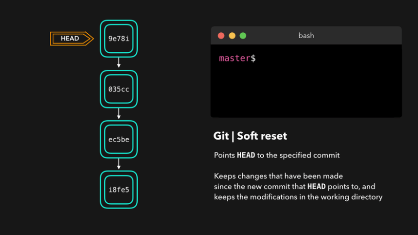

Soft reset
Soft reset перемещает HEAD к указанному коммиту (или индексу коммита относительно конца ветки), не избавляясь от изменений, которые были внесены в коммиты позже. Что это значит на практике?
Вот исходное положение:

На этой иллюстрации предполагается, что:
Что произойдет, если через Soft Reset "отменить" эти два коммита?
git reset --soft HEAD~2
Ответ: поизойдет только перемещение указателя HEAD (на коммит . А все изменения файлов, производимые в коммитах 035cc и 9e78i, включая создание файлов index.js и style.css, останутся в рабочей директории. То есть, произойдет откат до коммита ec5be,